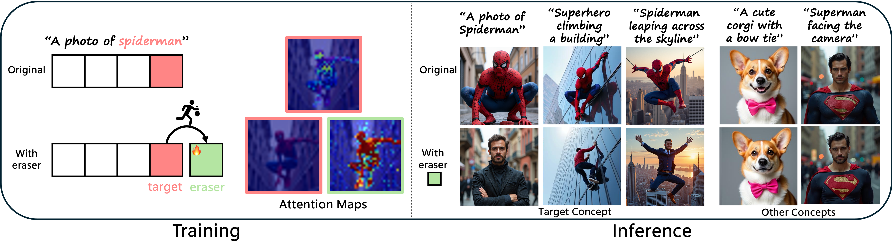
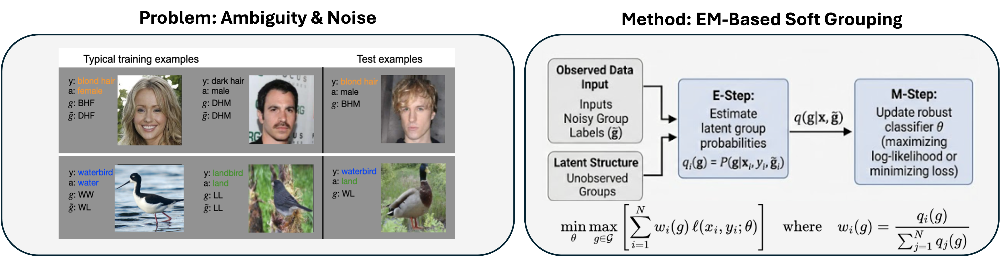
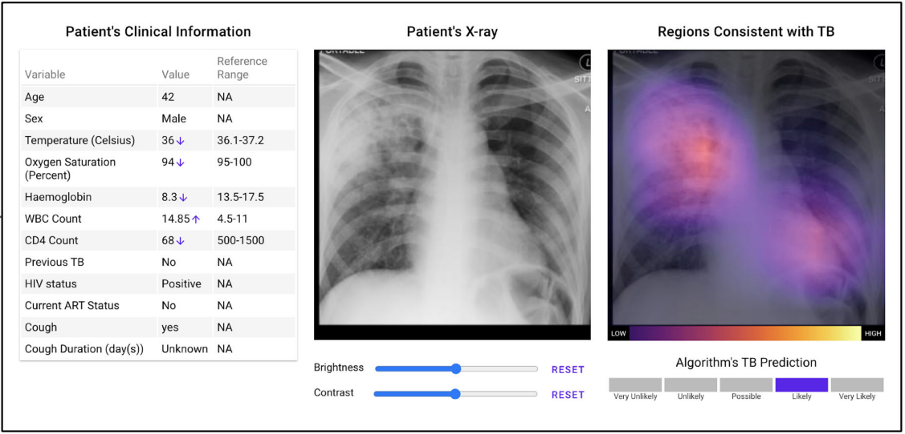
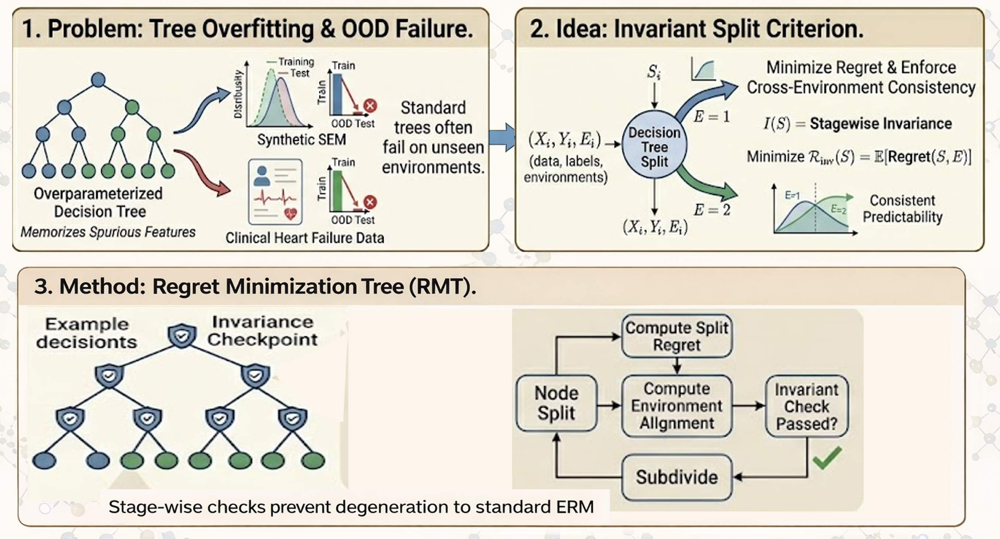
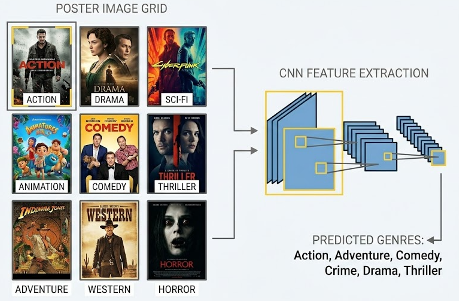
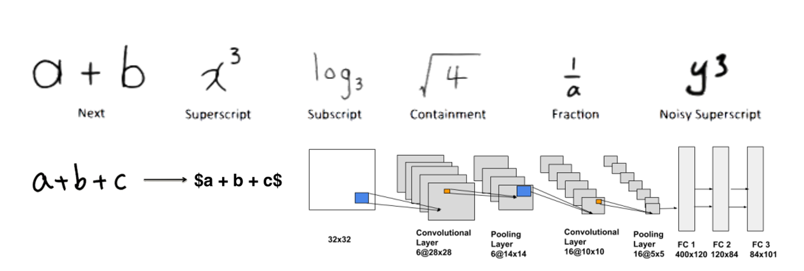

ML PhD Student, Researcher · MIT CSAIL
I am an ML PhD student at MIT CSAIL working on generative models, computer vision, and multimodal models. My research spans visual-textual representation in vision-language models, video generation models, and attention mechanisms for surgical intervention settings. Previously, I worked on robustness and out-of-distribution generalization, and on ML for healthcare applications. I received my BSc from Stanford University and my MSc from MIT.
Some of my current research interests include:




|
 |
Don't Judge a Movie by its Poster
CS231n: Deep Learning for Computer Vision · Stanford University, 2018
This project investigates whether deep learning models can overcome human bias to accurately predict a movie's genre using only its promotional poster. We implemented a custom CNN architecture and a ResNet-18 transfer learning model to perform binary and multi-label classification on the TMDB 5000 dataset.
|
|
 |
Converting Handwritten Mathematical Expressions into LaTeX
CS229: Machine Learning · Stanford University, 2017
We built an automated system to digitize complex handwritten mathematical equations into LaTeX code to streamline academic document preparation. The system utilizes an SVM for stroke segmentation, compares Neural Networks, CNNs, and Random Forests for character recognition, and employs heuristics for structural analysis. Our approach achieved 86% test accuracy for character classification and demonstrated significant improvements in recognizing rare mathematical symbols through elastic transformation data augmentation.
|
|
we:fm · Music Sharing App 🏆 Apple Best App, Stanford 2018
Designed and developed a social music sharing app from scratch — winner of Apple's Best App award at the Stanford Software Fair. Involved full-stack mobile development, UI/UX design, and market research.
|
Outside of research, I especially enjoy hiking, working out, and spending time with my dog Vince.
Everest Base Camp